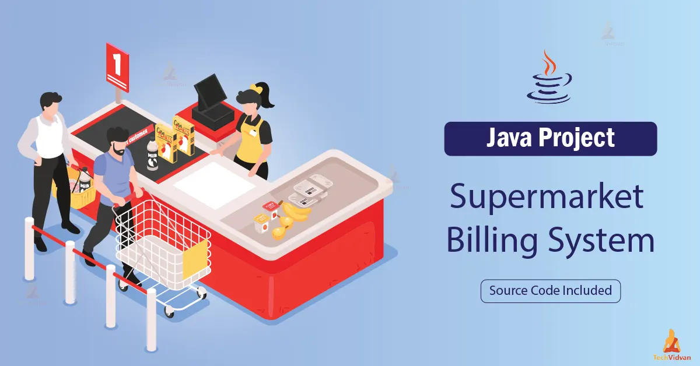
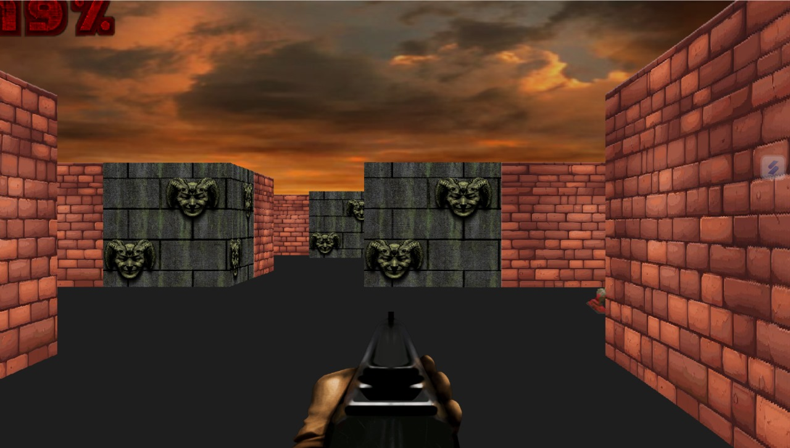

Organ Donation Website
A website created for an NGO to manage organ donation records, promote awareness, display events and allow user registration.
Client Management System
A web-based solution for tracking clients who lend money on interest. Includes record entry, payment tracking, and summary dashboard.

Supermarket Billing System
A Java-based billing software that handles product entry, invoice generation, and total cost calculation with GUI support.

3D Maze Survival Game
A 3D survival shooter game built in Python using Ursina Engine. Includes maze navigation, enemy AI, and player health system.